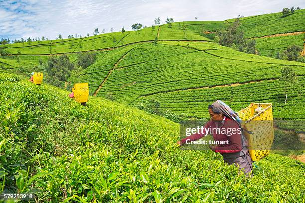

Tea: The Refreshing Crop

Uses of Tea
Tea is one of the most popular beverages globally, with a wide range of uses:
- Beverages: Tea is primarily used to make hot or cold drinks, including green tea, black tea, and herbal tea.
- Health Benefits: Known for its antioxidant properties, it helps in digestion and has a calming effect.
- Skincare Products: Tea extracts are used in lotions, creams, and face masks for their soothing and anti-aging properties.
- Aromatherapy: Tea oils, especially from green tea, are used in essential oils and bath products.
Types of Tea
Tea comes in several varieties, each with its unique flavor and processing method:
- Green Tea: Made from unoxidized leaves, green tea retains its green color and is rich in antioxidants.
- Black Tea: Fully oxidized, giving it a strong flavor and darker color, popular worldwide.
- Oolong Tea: Partially fermented, offering a unique flavor profile between green and black tea.
- White Tea: Made from the young leaves and buds, known for its delicate taste and low caffeine content.
- Herbal Tea: Technically not true tea, but infusions made from herbs, flowers, and fruits.
Growth Requirements for Tea
Tea plants require specific conditions for optimal growth:
- Climate: Prefers tropical and subtropical climates with temperatures between 20°C to 30°C (68°F to 86°F).
- Soil: Grows best in well-drained, acidic soils with a pH of 5.5 to 6.5.
- Water: Requires moderate rainfall and regular irrigation, especially in dry months.
Natural Fertilizers for Tea
To promote healthy growth, the following natural fertilizers are recommended for tea plants:
- Compost: Provides a balanced mix of nutrients, improving soil structure and moisture retention.
- Green Manure: Adds nitrogen to the soil, helping promote leaf growth.
- Fish Emulsion: A natural liquid fertilizer that helps with root development and overall plant health.
Pest and Disease Prevention
Effective pest and disease management is essential for healthy tea crops:
- Tea Mosquito Bug: Controlled using organic insecticides like neem oil and through the use of beneficial insects.
- Red Spider Mite: Managed by maintaining proper humidity levels and applying organic sprays.
- Leaf Spot: Prevented by regular pruning and improving air circulation around the plants.
Benefits of Tea
- Antioxidants: Tea is packed with antioxidants that help fight free radicals in the body.
- Boosts Metabolism: The caffeine and catechins in tea can help improve metabolic rate.
- Promotes Hydration: Tea contributes to daily water intake and helps keep the body hydrated.
- Mental Alertness: The caffeine in tea enhances cognitive function and boosts alertness.
Frequently Asked Questions
1. How long does it take for tea plants to mature?
Tea plants generally take 3 to 5 years to mature and produce leaves suitable for harvesting.
2. Can tea be grown in non-tropical regions?
Tea requires a tropical or subtropical climate, but in cooler regions, it can be grown in greenhouses or at higher altitudes.
Back to Crop List